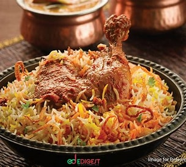
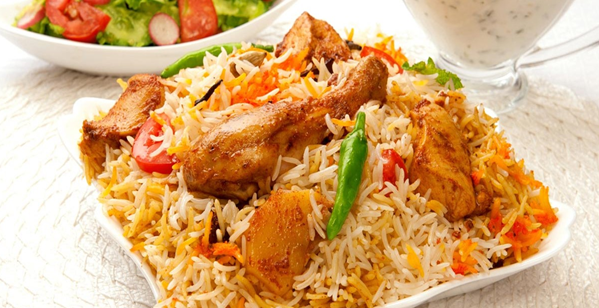
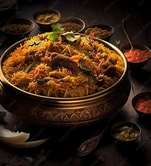

Biriyani is very popular dish in india. But its origin took place in persia Pratibha Karan, author of Biryani, writes how biryani is of Mughal origin,derived from pilaf varieties brought to the Indian subcontinent by Arab and Persian traders. She speculates that the pulao was an army dish in medieval India. Armies would prepare a one-pot dish of rice with any available red meat. Over time, the dish became biryani due to different methods of cooking, with the distinction between "pulao" and "biryani" being arbitrary.[8][15]
Dindigul Thalapakattu Biryani is the best place to have biryani of any kind if you are a biryani lover. This restaurant specializes in non-vegetarian biryani’s and they are simply mind blowing. There are many outlets of this shop and each of the outlets provides biryani’s which are the best. The meat that comes with the biryani is soft and tender. This a heaven for all the meat lovers as they have a collection of non-vegetarian dishes that you cannot miss out.


Biryani is one of the most popular dishes in South Asia and among the South Asian diaspora, though the dish is often associated with the region's Muslim population in particular.[1] Regional variations exist, such as regarding the addition of eggs and/or potatoes, as well as religious ones, such as the replacement of meat with paneer or vegetables by vegetarians. [2] Similar dishes are also prepared in many other countries like Iraq and Malaysia, and was often spread to such places by South Asian diaspora populations.[3][4] Biryani is the single most-ordered dish on Indian online food ordering and delivery services, and has been described as the most popular dish in India.[5][6
click here

Try it out by visiting our HBB
Biriyani is derived from the farsi word biriyan
. Based on the name , and cooking style (dum) ,oqne can conclude
that the dish originated in persia and/or Arabia.It could have come from persia via Afghanistan to North India.
If target="_blank", the link will open in a new browser window or tab.
This is a addresses .
| Calcutta Biryani | Lucknowi Biryani | Malabar Biriyani |
|---|---|---|
| 1.Bengal got its Biryani in 1856, when the Nawab of Awadh, Wajid Ali Shah was exiled from Lucknow. | 1.The Lucknowi Biryani was as grand as a royal dish could go, but in terms of taste and not spices. | 1.A very popular dish among the community of Malabar Muslims, this variation of the dish originated in Kerala. |
| 2.A simpler variation of the biryani, Calcutta biryani is light and mild regarding spices. | 2. It has a mild flavour and is comparatively lighter on the stomach. | 2.Although the components of meat and spices are similar to the other varieties, how this biryani differs from the others is by the choice of its rice. |
Conceived in the kitchen of the Mughals, this came into India when the Mughals first started ruling India.
Conceived in the kitchen of the Mughals, this came into India when the Mughals first started ruling India.
Conceived in the kitchen of the Mughals, this came into India when the Mughals first started ruling India.Conceived in the kitchen of the Mughals, this came into India when the Mughals first started ruling India.London is the capital city of England. It is the most populous city in the United Kingdom, with a metropolitan area of over 13 million inhabitants.
Standing on the River Thames, London has been a major settlement for two millennia, its history going back to its founding by the Romans, who named it Londinium.